Аналитика
Метрики безопасности приложений
Сбор данных и контроль метрик являются важнейшей частью процесса безопасной разработки приложений.
В AppSec.Hub реализованы механизмы сбора и консолидации данных для автоматизированного формирования метрик в различных областях, что позволяет осуществить эффективный анализ и управление разработкой приложения. Система хранит и получает данные метрик из хранилища данных (data warehouse).
Выберите пункт меню Metrics в верхнем левом углу экрана. На экране откроется страница Metrics.
На сегодняшний день на странице Metrics доступны следующие метрики:
- Codebase Structure.
- Defect Summary.
- Scan Results.
- Risk Density.
- SAST Issues Discovery.
- SCA Security Issues Discovery.
- SCA Compliance Issues Discovery.
- Correlation Flow.
На каждой из вкладок пользователь может сформировать интересующую его выборку данных при помощи набора фильтров и настроек.
Codebase Structure
На вкладке Codebase Structure отображены метрики исходного кода для всех приложений в AppSec.Hub, включая:
- Размер исходного кода по приложениям (измеряется строками кода или количеством файлов).
- Размер исходного кода по языкам программирования (измеряется строками кода или количеством файлов).
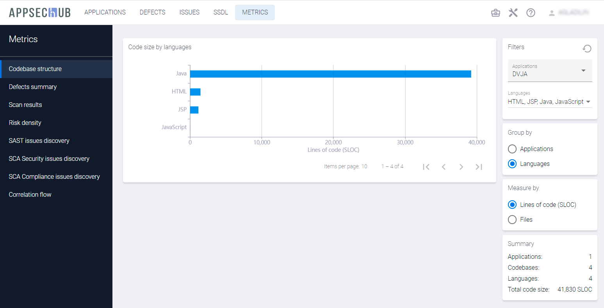
Чтобы получить метрики исходного кода для конкретного приложения (приложений) и/или языка (языков) программирования, выберите приложение (приложения) из выпадающего меню в поле Applications и/или язык (языки) программирования из выпадающего меню в поле Languages на вкладке Filters в правом верхнем углу.
Нажмите кнопку в правом верхнем углу, чтобы сбросить фильтры.
Defect Summary
На вкладке Defect summary представлена сводка дефектов с информацией о дефектах безопасности приложений, заведенных на тестируемые приложения, включая:
- Общее количество дефектов с распределением по приоритетам или по статусу.
- Количество дефектов по приложениям с распределением по приоритетам или по статусу.
- Количество дефектов по кодовым базам с распределением по приоритетам или по статусу.
- Количество дефектов по артефактам с распределением по приоритетам или по статусу.
- Количество дефектов по инструментам AST с распределением по приоритетам или по статусу.
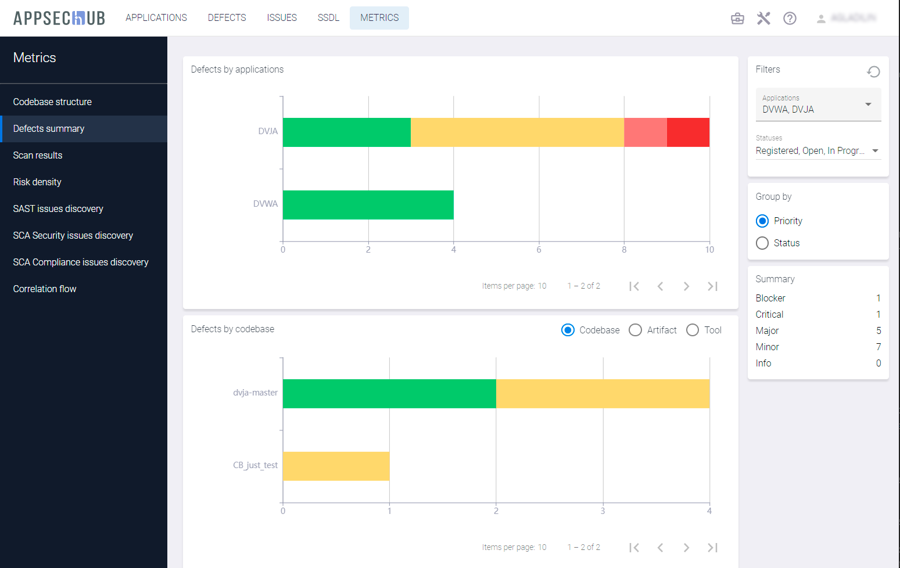
На этой странице есть два фильтра на вкладке Filters в правом верхнем углу, которые позволяют выбрать дефекты безопасности приложения на определенной стадии (стадиях) жизненного цикла дефекта для конкретного приложения (приложений). Выберите приложение из выпадающего меню в поле Applications, и этап жизненного цикла дефекта из выпадающего меню (Registered, Open, In Progress, Fixed, Rejected, Closed) в поле Statuses.
Используйте окно Group by, чтобы выбрать распределение дефектов по приоритету или по статусу с помощью пунктов Priority и Status.
В окне Summary приводится общая информацию по количеству дефектов.
Нажмите кнопку в правом верхнем углу, чтобы сбросить фильтры.
Scan Results
Для работы с метриками на вкладке Scan results обязательным является выбор временного интервала с помощью раскрывающегося меню Periods на вкладке Filters в правом верхнем углу. Можно выбрать интервал от последней недели до последних трех лет. Для выбранного периода времени отображаются следующие показатели.
- Найденные проблемы, сгруппированные по практикам (подсчитанные по четырем практикам — SAST, DAST, SCA Security, SCA Compliance), если на вкладке Group by выбран пункт Practice.
- Найденные проблемы, сгруппированные по серьезности (учитываются по уровням серьезности — Low severity, Medium severity, High severity, Critical severity), если на вкладке Group by выбран пункт Severity.
- История сканирования, измеряемая количеством закончившихся успешно и неудачно сканирований.
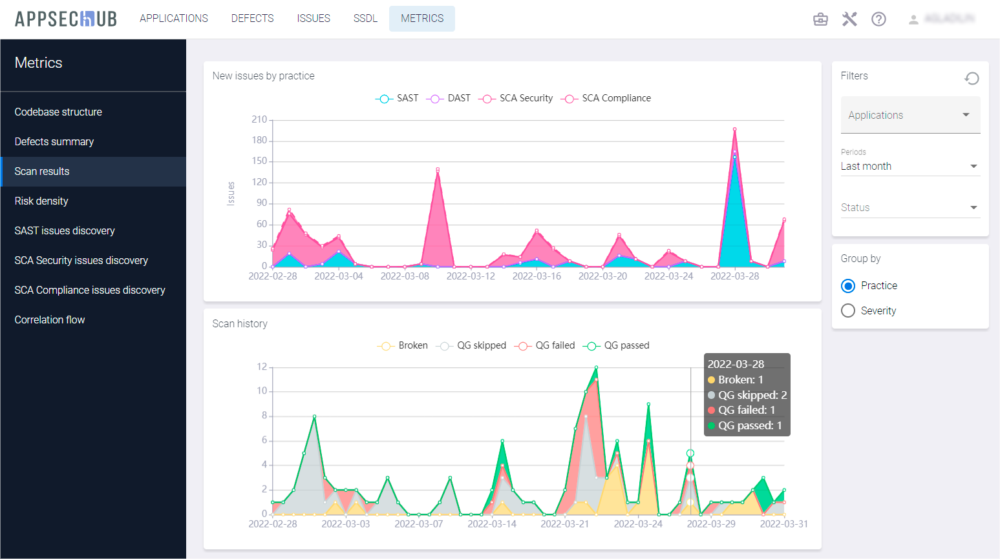
Существует возможность произвести настройку графиков. Чтобы просмотреть новые проблемы по одной или нескольким практикам, выберите пункт Practice в окне Group by и на графике кликните название практики (SAST, DAST, SCA Security, SCA Compliance), чтобы отключить отображение проблем в рамках этой практики. Таким образом, на графике можно оставить, например, только одну практику. В качестве примера на рисунке ниже показаны новые проблемы, найденные в рамках практики SCA Security за последний месяц.
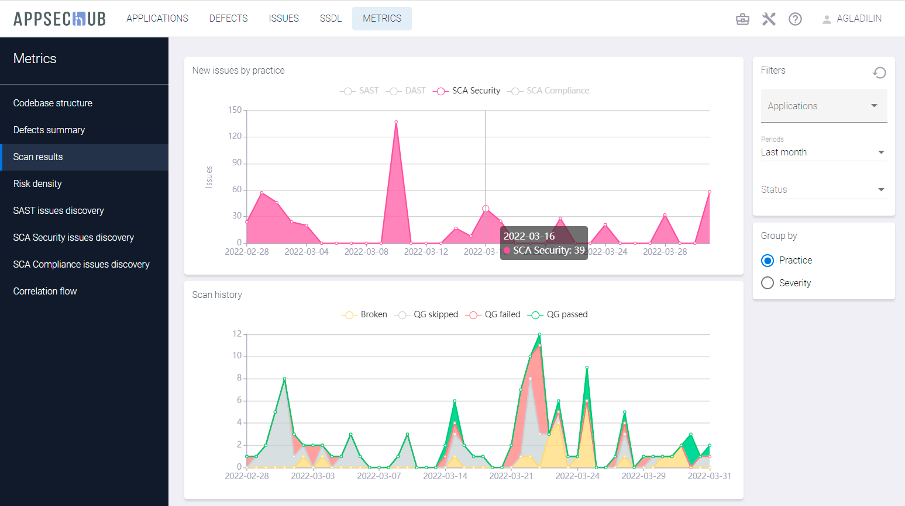
Чтобы получить метрики по новым проблемам с данными по серьезности проблем, выберите пункт Severity на вкладке Group by и кликните уровень серьезности (Low severity, Medium severity, High severity, Critical severity) на графике, чтобы включить или исключить из графика новые проблемы с данным уровнем серьезности. Таким образом, можно оставить на графике, например, только проблемы среднего уровня серьезности за последний месяц, как это показано на рисунке ниже.
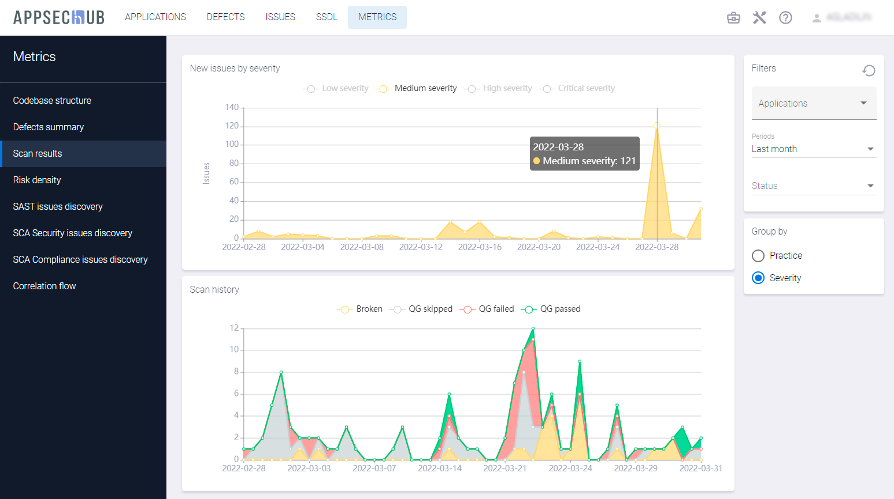
На графике Scan history есть возможность выбрать только успешные или неудачные сканирования. Кликните на графике элемент Broken, QG skipped, QG failed, QG Passed, чтобы включить или исключить соответствующие сканирования из графика.
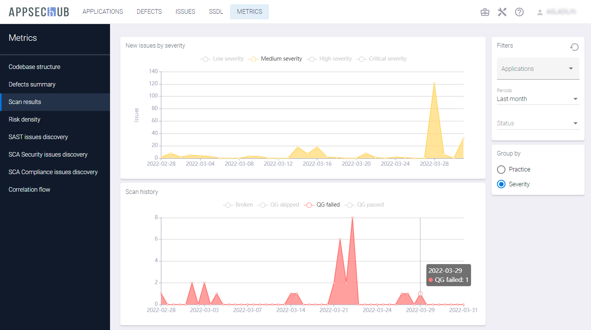
Чтобы получить метрики результатов сканирования для конкретного приложения (приложений), выберите приложение или приложения из выпадающего меню в поле Applications на вкладке Filters в правом верхнем углу.
Нажмите кнопку в правом верхнем углу, чтобы сбросить фильтры.
Risk Density
Для работы с метриками на вкладке Risk density обязательным является выбор временного интервала с помощью выпадающего меню Periods на вкладке Filters в правом верхнем углу. Можно выбрать интервал от последней недели до последних трех лет. Для выбранного периода времени отображаются следующие метрики:
- Плотность рисков в динамике, измеряемая количеством проблем (рисков) на KSLOC исходного кода.
- Динамика проблем по четырем практикам (SAST, DAST, SCA Security, SCA Compliance).
- Размер кодовой базы, измеряемый в SLOC.
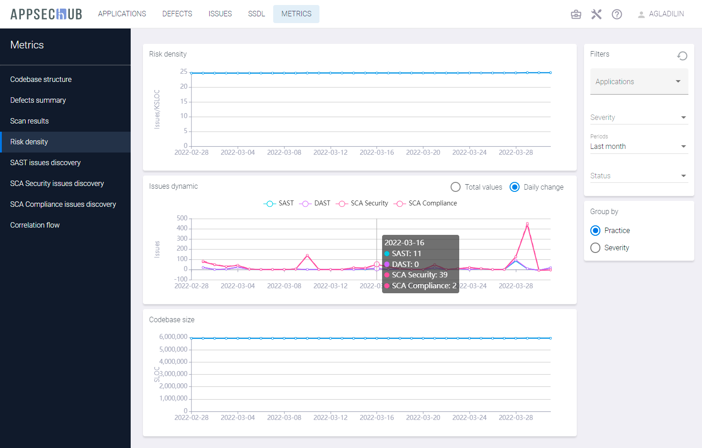
Существует возможность произвести настройку графика Issues dynamic. Чтобы просмотреть динамику проблем по одной практике или по нескольким практикам, выберите пункт Practice на вкладке Group by и кликните название практики (SAST, DAST, SCA Security, SCA Compliance) на графике, чтобы включить или исключить из графика проблемы, обнаруженные в рамках этой практики. Таким образом, можно оставить, например, только одну практику на этом графике. Выберите пункт Total values или Daily change, чтобы отобразить на графике соответственно общее число проблем или изменение этого числа за день. На рисунке ниже показано в качестве примера ежедневное изменение числа проблем, найденных в рамках практики SAST за последний месяц.
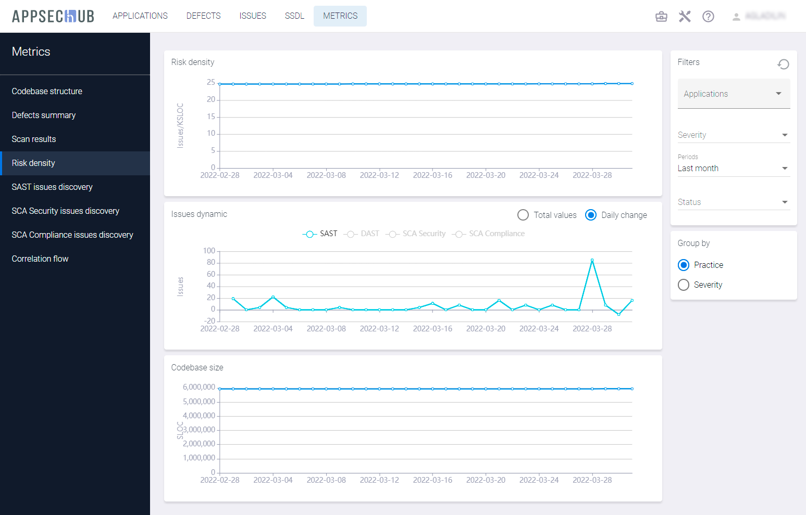
Чтобы получить метрики по динамике проблем с данными по серьезности проблем, выберите пункт Severity на вкладке Group by и кликните уровень серьезности (Low severity, Medium severity, High severity, Critical severity) на графике, чтобы включить или исключить из графика новые проблемы с данным уровнем серьезности. Выберите пункт Total values или Daily change, чтобы отобразить на графике соответственно общее число проблем или изменение этого числа за день. На рисунке ниже показаны в качестве примера ежедневное изменение числа проблем средней степени серьезности, найденных за последний месяц.

Чтобы получить метрики плотности рисков для конкретного приложения (приложений), выберите приложение или приложения из выпадающего меню в поле Applications на вкладке Filters в правом верхнем углу.
Нажмите кнопку в правом верхнем углу, чтобы сбросить фильтры.
SAST Issues Discovery
На странице SAST issues discovery показаны следующие метрики:
- Проблемы, найденные в рамках практики SAST, сгруппированные по приложениям, если на вкладке Group by выбран пункт Applications, с распределением по уровням серьезности.
- Проблемы, найденные в рамках практики SAST, сгруппированные по категориям, если на вкладке Group by выбран пункт Categories, с распределением по уровням серьезности.
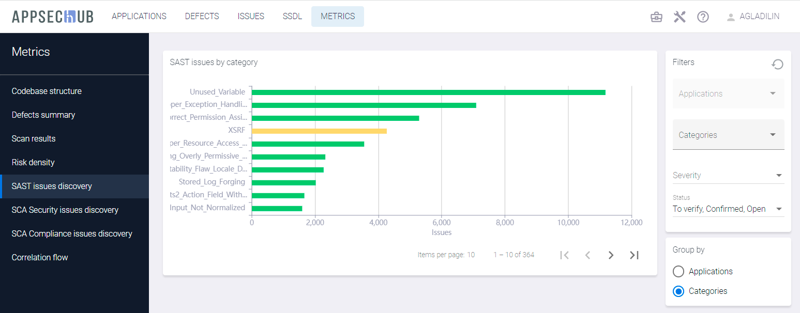
Чтобы получить метрики обнаружения проблем в рамках практики SAST для конкретного приложения (приложений), выберите пункт Applications на вкладке Group by и выберите приложение или приложения из выпадающего меню в поле Applications на вкладке Filters в правом верхнем углу.
Чтобы получить метрики обнаружения проблем в рамках практики SAST для конкретной категории (категорий), выберите пункт Categories на вкладке Group by и выберите категорию или категории из выпадающего меню в поле Categories на вкладке Filters в правом верхнем углу.
Используйте выпадающие меню в полях Severity и Status на вкладке Filters, чтобы получить метрики для проблем, найденных в рамках практики SAST, с заданной серьезностью и/или статусом.
Нажмите кнопку в правом верхнем углу, чтобы сбросить фильтры.
SCA Security Issues Discovery
На странице SCA Security issues discovery показаны следующие метрики:
- Проблемы безопасности, найденные в рамках практики SCA Security, сгруппированные по приложениям, если на вкладке Group by выбран пункт Applications, с распределением по уровням серьезности
- Проблемы безопасности, найденные в рамках практики SCA Security, сгруппированные по компонентам, если на вкладке Group by выбран пункт Components, с распределением по уровням серьезности
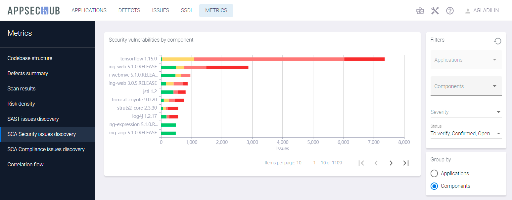
Чтобы получить метрики обнаружения проблем в рамках практики SCA Security для конкретного приложения (приложений), выберите пункт Applications на вкладке Group by и выберите приложение или приложения из выпадающего меню в поле Applications на вкладке Filters в правом верхнем углу.
Чтобы получить метрики обнаружения проблем в рамках практики SCA Security для конкретного компонента (компонентов), выберите пункт Components на вкладке Group by и выберите компонент или компоненты из выпадающего меню в поле Components на вкладке Filters в правом верхнем углу.
Используйте выпадающие меню в полях Severity и Status на вкладке Filters, чтобы получить метрики для проблем, найденных в рамках практики SCA Security, с заданной серьезностью и/или статусом.
Нажмите кнопку в правом верхнем углу, чтобы сбросить фильтры.
SCA Compliance Issues Discovery
На странице SCA Compliance issues discovery показаны следующие метрики:
- Проблемы, связанные с корректностью использования лицензий, найденные в рамках практики SCA Compliance, сгруппированные по приложениям, если на вкладке Group by выбран пункт Applications, с распределением по уровням серьезности.
- Проблемы, связанные с корректностью использования лицензий, найденные в рамках практики SCA Compliance, сгруппированные по лицензиям, если на вкладке Group by выбран пункт Open source licenses, с распределением по уровням серьезности.

Чтобы получить метрики обнаружения проблем, связанных с корректностью использования лицензий, в рамках практики SCA Compliance для конкретного приложения (приложений), выберите пункт Applications на вкладке Group by и выберите приложение или приложения из выпадающего меню в поле Applications на вкладке Filters в правом верхнем углу.
Чтобы получить метрики обнаружения проблем, связанных с корректностью использования лицензий, в рамках практики SCA Compliance для конкретной лицензии (лицензий), выберите пункт Open source licenses на вкладке Group by и выберите лицензию или лицензии из выпадающего меню в поле Licenses на вкладке Filters в правом верхнем углу.
Используйте выпадающие меню в полях Severity и Status на вкладке Filters, чтобы получить метрики для проблем, найденных в рамках практики SCA Compliance, с заданной серьезностью и/или статусом.
Нажмите кнопку в правом верхнем углу, чтобы сбросить фильтры.
Correlation Flow
Вкладка Correlation Flow предоставляет аналитические данные о корреляции проблем, обнаруженных во время тестирования безопасности приложения с использованием инструментов AST, и приводящих к занесению дефектов безопасности приложения на их основе.
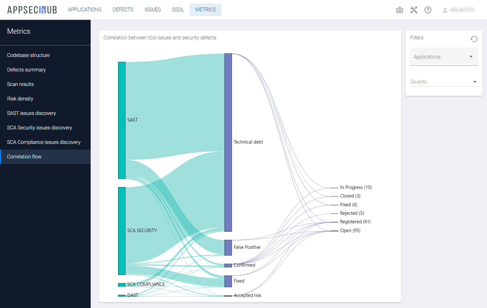
На этой вкладке представлена статистика с точки зрения анализа корреляции проблем безопасности, а также формирования и занесения дефектов безопасности на их основе. Проблемы безопасности, обнаруженные инструментами AST, учитываются по четырем практикам (SCA License, SCA Security, SAST и DAST). Следующее разделение проблем выполняется по статусу проблем (Technical debt, False Positive, Confirmed, Fixed, Accepted risk). AppSec.Hub помогает определить корреляцию проблем безопасности, сгруппировать проблемы и занести дефекты безопасности.
Дефекты безопасности, открытые на основе проблем безопасности, могут быть отфильтрованы по уровню серьезности (Low, Medium, High, Critical) и по приложению.
Чтобы получить метрику Correlation Flow для конкретного приложения, нажмите поле Applications на вкладке Filters в правом верхнем углу и выберите приложение из выпадающего меню.
Используйте выпадающее меню в поле Severity на вкладке Filters, чтобы получить метрику Correlation Flow для дефектов безопасности с заданным уровнем серьезности.
Нажмите кнопку в правом верхнем углу, чтобы сбросить фильтры.